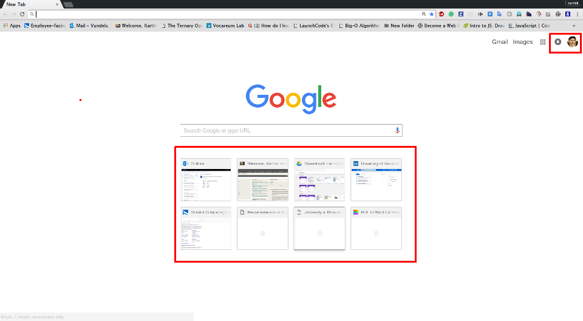

The purpose of this exercise is to utilize various components of HTML.
Create an HTML document named "index.html".
The page should contain
paragraphs
Headings
unordered list
ordered list
at least two div & span elements
at least four block and inline elements
images at appropriate locations in the HTML file and should be
clickable,i.e.,when you click the image, it should redirect you to the
location of the image in a new tab
any relevant video/YouTube video. The video should have controls
like play, pause, etc.
Google Task
The purpose of this exercise is to utilize components of CSS.
Download the Source Code and run the starter code given in the'Inclass'folder with WebStorm
As shown in the ImageI, add the notifications icon and your image in the corner of the page
and the recently opened tabs below the search bars of Google.

Image I: Google page with user details
CSS Task
The purpose of this exercise is to utilize both HTML and CSS to design a color grid.
As shown in the Image II, create a 'cube-shaped color grid' using HTML <div>,
<span> elements and CSS elements
Each color grid should be 70 × 70
The cube should be center-aligned
No mandatory of colors (you can choose colors of your like)